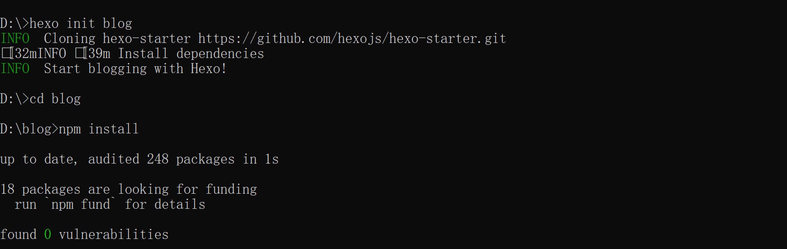
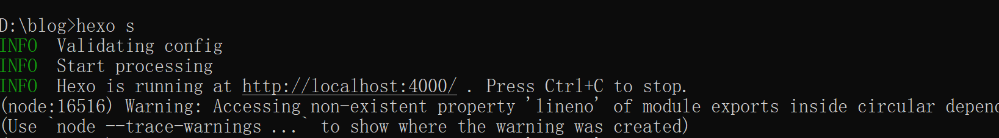

此次搭建是基于 Github 的 Blog 搭建
准备环境
- 环境为node和git
- 查看安装是否成功
1 | git version // 验证git |
安装Hexo
执行命令：npm install -g hexo-cli
安装完成后执行如下命令，使Hexo在指定文件夹中创建所需文件
1 | hexo init '文件名' |
在 GitHub.io 中创建仓库
- 创建的仓库名必须为用户名+github.io的格式才可以
创建成功后可以在仓库中随意添加html类型的文件，然后在浏览器中输入网址http://用户名.github.io就可以看到你刚刚在html文件中写的东西了。
部署GitHub Pages与Hexo同步
过程是初始化一下你的git以及生成ssh密钥，由于之前都搞过了，这里便不细说。
部署到GitHub
连接本地与GitHub，在连接之前需要进行Hexo配置修改以及安装部署插件。
打开根目录下的_config.yml配置文件，拉至最下方配置如图，github那栏要使用自己的用户名。
然后安装部署插件 hexo-deployer-git。执行命令npm install hexo-deployer-git --save
最后执行一下部署上传命令
1 | hexo g //g为generate的缩写 |
下载主题
你可以移步至官网挑选自己喜欢的主题。我选择的是cards主题，不同的主题安装和配置的过程可能会有略微不同，但都差不多，你一般可以在主题下方或者主题预览中找到主题相应的github库以及安装过程。
1 | git clone https://github.com/ChrAlpha/hexo-theme-cards.git themes/cards |
值得注意的是这里会涉及到两个 _config.yml 文件：一个是theme/cards中的主题配置文件是用于对主题的管理的，还有一个则是站点也就是根目录下的配置文件。需要注意区分。
对主题进行修改和配置
打开主题下的配置文件，你可以看到许多的配置，你也可以移步至你所选的主题官网去查看官网对于配置文件的具体描述和设置方案，然后你就可以按照官方文档的步骤或方式对配置文件进行修改，把你的 blog 设置成自己喜欢的样子。
下面介绍一下最基础的添加标签页。
显示标签页和分类页
1 | hexo new page tags //该命令会在你的根目录下的source文件夹中自动产生tags/index.md文件 |
对index.md文件进行修改，添加如图配置
这样在你的文章中添加标签后，标签能够显示在文章中且同步更新到标签页。
分类页也是同理，新建之后添加如下配置。
一些踩坑
Hexo init 失败
在执行Hexo init的时候忘记挂代理导致连接超时clone没成功，忘记截图了，出现了类似如图错误
总之就是clone失败，然后到导致了安装依赖项？然后在尝试Hexo init就是如图报错
不懂，看了一下网上教程，感觉不太靠谱，一气之下直接把整个 blog 文件给删了，居然就 ok 了，然后再进行一次init以及下面的两步操作，美美成功了！

再次尝试hexo s命令，并在浏览器里输入http://localhost:4000/

能看见hexo的初始界面就是成功了。
hexo g报错
看了一下，原来是配置 _config.yml 文件的时候有问题，要特别注意branch：后面的空格。
更改好后再次执行hexo g即可。
hexo d报错
没错，hexo d我有踩坑了，真的是服。实在找不出来有什么问题，把 blog 文件又删了重装一遍，步骤和上述的步骤一样。
标签页无法同步更新
可能是source/tags/index.md中添加的配置的问题，首先检查文件 index.md 中有没有添加 layout 属性，看一下官方文档中需要添加的属性值
1 | layout: tag //因为不同主题设置的不同,属性值可能会不一样 |
刚开始因为没有好好看官方文档，在 layout 值设置的时候一直看网上的教程，但由于大多数主题这些属性值都是 tags 所以就导致即使设置了 layout 但是标签云依旧没有同步更新，所以官方文档一定要好好看。
小结
-
觉得搭博客真的真的是挺磨人的一件事，中间也寄了很多次。好吧，也许就是因为我菜菜。
-
官方文档真的很重要，在配置和修改主题时一定一定要先看看官方文档，这能帮你避开不少的坑！！
本文作者：GhDemi
本文链接： https://ghdemi.github.io/2022/04/09/My-Blog-Built/
文章默认使用 CC BY-NC-SA 4.0 协议进行许可，使用时请注意遵守协议。